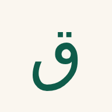

Qissaقِصَّة
Arapçayı metnin içinde öğrenin
Learn Arabic inside the text
Klasik İslâmî metinler, başlangıçtan ileri seviyeye; her kelimede medrese usûlüyle iʿrâb, sarf ve belâgat.
Classical Islamic texts from beginner to master level, with madrasah iʿrāb, ṣarf and balāgha on every word.
Qissa'yı açOpen Qissa- Hikâyeler ve klasik metinlerStories and classical texts Siyer, Zehebî'nin Siyer'i, Tenûhî, Muallakalar ve daha fazlası — altı seviye. Prophets' stories, al-Dhahabī's Siyar, al-Tanūkhī, the Muʿallaqāt and more — six levels.
- Her kelimede iʿrâbIʿrāb on every word Bir kelimeye dokunun: görevi, i'râbı, kökü ve vezni — Arapça, Türkçe, İngilizce. Tap a word: its role, case, root and pattern — in Arabic, Turkish and English.
- AtölyeThe Atölye Sarf, i'lâl, i'râb, belâgat ve aruz laboratuvarları; İzzî, Merâh, Şuzûr ve Telhîs'ten. Labs for ṣarf, iʿlāl, iʿrāb, balāgha and ʿarūḍ, fed from ʿIzzī, Marāḥ, Shudhūr and the Talkhīṣ.
- İnternetsiz çalışırWorks offline Bir kez yüklendikten sonra bağlantı gerekmez; ilerlemeniz cihazınızda kalır. After one full load no connection is needed; your progress stays on your device.
Telefona kurulum
Install on your phone
iPhone / iPadiPhone / iPad
- Bu sayfayı Safari ile açın.
- Alttaki Paylaş düğmesine dokunun (yukarı oklu kare).
- Ana Ekrana Ekle → Ekle.
- Ana ekrandaki Qissa simgesi uygulamayı doğrudan, tam ekran açar.
- Open this page in Safari.
- Tap Share (the square with the arrow).
- Add to Home Screen → Add.
- The Qissa icon then opens the app directly, full screen.
Android / SamsungAndroid / Samsung
- Bu sayfayı Chrome veya Samsung Internet ile açın.
- Menüden (⋮ veya ≡) Uygulamayı yükle ya da Ana ekrana ekle'yi seçin — veya aşağıdaki düğmeye dokunun.
- Test kullanıcılarına gönderilen APK dosyası da aynı uygulamadır; ikisinden birini kurmanız yeterli.
- Open this page in Chrome or Samsung Internet.
- From the menu (⋮ or ≡) choose Install app or Add to Home screen — or tap the button below.
- The APK sent to test users is the same app; install either one.
BilgisayarComputer
Chrome, Edge veya Safari'de «Qissa'yı aç»a tıklayın. Chrome ve Edge adres çubuğundaki yükle simgesiyle uygulama olarak kurulabilir.
Click «Open Qissa» in Chrome, Edge or Safari. Chrome and Edge can install it as an app from the install icon in the address bar.
Test sürümü — bütün metinler ve açıklamalar hoca onayı beklemektedir. Test release — every text and explanation is pending scholarly review. · GizlilikPrivacy